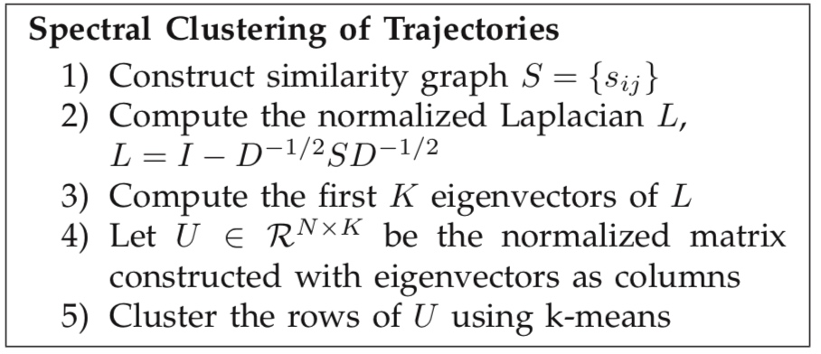

Trajectory Learning for Activity Understanding: Unsupervised, Multilevel, and Long-Term
Adaptive Approach
Brendan Tran Morris, Member, IEEE, and Mohan Manubhai Trived
其整个的分析框架主要包含以下三个部分：

\[Trajectory = (Tr_1, Tr_2, ....Tr_n)\]
4.1 node level modeling
poi
一般POI点包括：轨迹的开始和结束，轨迹逗留的地点，用户自己定义的一些点。
- 轨迹的开始和结尾一般是entry/exit的地点，通过数据中的tr1和trn即可得到样本点
- 逗留点，需要用算法识别出来，一般采用\(\epsilon\)半径内最少逗留\(T\)时间来识别
- 其他重要点(原作者只列了前2项，不依赖先验可以直接挖掘出来)，可以自己人为定义
根据数据点，建立2维高斯混合模型(假设每个POI点的分布都服从正态分布)。
\[Z=\sum w_i N(u_i,\Sigma_I)\]
因为真实有多少POI点是未知的，需要估计。可以认为\(d_i=\frac{w_i}{\pi\sqrt|\Sigma_i|}\)为第i个点的重要程度，可以将重要程度较小的舍弃。
4.2 spatial level learning
为了发现node与node之间的轨迹，需要进行聚类，而聚类首先需要解决衡量不同长度轨迹相似性问题。这里以LCSS为例(作者说是根据一些文献表现相对最好的，但实际上应该是在一定条件下)
\[D_{LCSS}(T_i, T_j) = 1 - \frac{LCSS(T_i, T_j)}{min(T_i, T_j)}\]
谱聚类
根据距离矩阵可以得到相似性矩阵S进行聚类

作者在最后没有使用k-means而是使用的C-means，主要是为了能输出最后的一个隶属度。
# 图聚类
# https://sklearn.apachecn.org/docs/0.21.3/22.html#spectral-clustering
from sklearn.cluster import SpectralClustering
sc = SpectralClustering(3, affinity='precomputed', n_init=100, assign_labels='discretize')
sc.fit_predict(adjacency_matrix)
创建轨迹
聚类完之后，对于每一类需要提取其center来表征这个类所代表的轨迹。但是轨迹的长度有可能是不同的，
轨迹合并
谱聚类一开始的时候会选择一个大一些的聚类数目k，然后再将相似类别进行合并，收缩到真实的类别数。
这里是使用的DTW距离，计算两个类之间的dtw距离，如果小于一定的阈值就认为这两类相似然后进行合并。
4.3 Dynamic-temportal level learning
聚类只能提供空间的轨迹形态，没办法反应出人们的行为层面信息。作者这里针对每一个聚好的类，使用的HMM模型，学习出其pattern。 这部分学习中，使用的是原始的轨迹信息\(F_i={f_t}\), \(f_t = [x_t, y_t, u_t, v_t]\)
详细的过程在作者的另一篇论文中写的比较详细。每一个HMM模型可以记做是\(\lambda = (A, B, \pi)\).
内在的HMM state \(\{q_j\}_{j=1}^Q\)假定符合高斯混合模型
4.4 activity 分析
有了前面的path 模型之后，可以对activity进行分析。
(1) 轨迹整体分析
- 轨迹分类
- 异常轨迹检测
(2) online分析
轨迹预测
备注
关于各种方法的比较
Comparison of similarity measures for trajectory clustering in outdoor surveillance scenes
Learning trajectory patterns by clus- tering:experimental studies and comparative evaluation